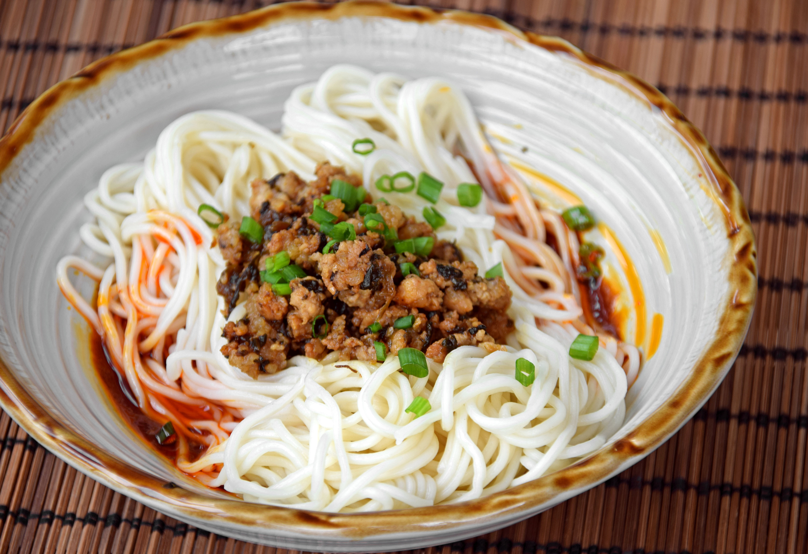

Dan Dan Noodles

Dan dan noodles are a type of Sichuan noodles served in a spicy sauce made with chili oil, Sichuan pepper,
minced
pork, and sesame paste.
Ingredients, Sichuan Chili Oil
- Sichuan Erjingtiao Dried Chilis (二荆条), 90g. The highest quality ones you can find. You might be able to find
these in powdered or pre-cut-and-deseeded form, but I’ve found that quality wise they’re far inferior to the
whole dried chilis. We’re working with a ratio of three parts Erjingtiao to two parts Chaotianjiao Heaven
Facing Chilis – we use a combination because different chilis’ll have different effects. These Erjingtiao’ll
impart a great flavour and fragrance to the oil.
- Chaotianjiao Heaven Facing Peppers (朝天椒), 60g. Erjingtiao are great but slightly on the mild side. We want
some kick, and Chaotiaojiao’ll provide it in spades.
- Sichuan Caiziyou (菜籽油), ~2 cups. Caiziyou is a sort of extra virgin Canola Oil that’s integral in Sichuanese
cooking. It’s got a real distinctive smell and taste, and seems real difficult to source outside of China.
After some quick googling I found a couple Canadian producers of this stuff, but if you really can’t find
this, you could opt for peanut or sunflower oil… just make sure that you’re not using a blended oil.
- Ginger (姜), 1-2 slices. Ok, so optional ingredient time. Some families in Sichuan believe that Chili Oil
should be all about the chilis, with no other spices added. Some families add a spice mix – we like the
complexity the extra spices add, so we included them. Now it should also be noted that there’s a huge amount
of variability in the spice mixes used… we just went for the bog standard mix.
- Star Anise (八角), 3. Optional, part of the spice mix.
- Dried Bay Leaves (香叶), 2-3. Optional, part of the spice mix.
- Cinnamon or Cassia (桂皮), 1 stick. Optional, part of the spice mix.
- Black Cardamom (草果), 1 pod. Optional, part of the spice mix. Slightly crushed to open.
- Cloves (丁香), 8-10. Optional, part of the spice mix.
- Fennel or Caraway Seed (小茴香), 1 tsp. Optional, part of the spice mix.
- Sichuan Peppercorn (花椒), 1 tsp. Optional, part of the spice mix.
- Zicao (紫草) -or- Good Hungarian Sweet Paprika, 1 tbsp -or- Annatto Seeds, 1 tsp. Optional, these choices are
all just for looks. To aid in color, an herb called zicao is sometimes added to the oil to help dye it as
it’s heating. It actually does really help get a nice deep red color, but I figured that it might be almost
impossible for people abroad to source. So we also tested it against a batch where we added a tablespoon of
a good quality Hungarian Sweet Paprika into our chili mix… and the effects were quite similar with no
strange taste.
Process, Sichuan Chili Oil
- Toast and Deseed the Chilis. In a dry wok, toast your chilis first to up the flavour – just a minute on low
heat should be enough… then, deseed them. Now, I can already sense some chili-heads up in arms (“deseed
chilis? Blasphemy!”), but if you don’t deseed these (1) your chili powder’s gunna end up like one-third
seed, which’ll affect the flavour and color of the oil and (2) the dominant taste is gunna be one of like
pure capsicum. Of course, you don’t need to go too nuts deseeding – a couple seeds here or there is actually
quite nice.
- Blitz the Deseeded Chilis into a Powder. Let this go in the blender for a few minutes – we want a ‘powder’
not a ‘flake’. After blitzing, measure out your yield – that 150g should’ve given you about 1 cup. Depending
on what you got, we’ll adjust the oil quantity slightly… we want two parts oil to one part chili powder. If
using, toss your Sweet Paprika in with the chili powder and place it all in a metal bowl.
- Toast the Spices. In a dry wok, give your spices a quick one to two minute toast over low heat. We’ll be
infusing the oil with those spices, so I like to put them in a large mesh tea strainer.
- Put the Zicao (if using) in the Caiziyou Oil and bring the oil up to 130 degrees Celsius. Take out the
Zicao, maintain that temperature, toss in the spices and let them steep for ~3 minutes. If you’re using the
Zicao, make sure you’re not letting that stay in the oil for more than a minute – it’s pretty powerful.
Keeping the oil at roughly 130 degrees, fry those spices for roughly three minutes (or just until they
slightly turn color and start to smell real nice) to infuse the flavour into the oil, then take them out.
- Begin to bring the oil up to 190 degrees Celsius, and assemble the chili powder into a sort of ‘volcano’
shape. Last reminder that your chili powder should be in a heat safe bowl. Put the powder into a sort of
‘volcano’ shape, with a nice dip in the center to pour your first batch of oil. Why bother with this? 190
degree oil is scorching hot, hot enough to burn chili powder unless you stir vigorously. You’re gunna pour
the oil first into the center of your ‘volcano’, and mixing the edges of the volcano into it so that the
oil’s not lingering.
- At 190 degrees, pour half the oil in and stir vigorously. Wait, and pour in another quarter of the oil when
the oil cools down to 135 degrees. Wait, and pour in the remainder when the oil’s down to 85 degrees. So
yeah, the oil’s added in stages. This technique is sometimes described as yixiang erhong sanla (一香二红三辣) –
that is, the first pour brings out the fragrance of the chilis, the seconds pour brings out the redness, and
the last pour’ll bring out the heat. As we talked about in step five, make sure that for the first pour you
do a good job getting the oil in the center of your volcano.
- Once your chili oil mixture’s down at room temperature, cover and move the oil into the fridge. Let it sit
overnight, then strain the chili powder out. This is actually a pretty integral step. The oil’s gotta chill
together with the chili powder for a bit – the longer they steep together, the spicier it’ll be.
Keep that, store it, and use it in whatever Sichuan dish calls for it. Assuming you’re handling it in a hygienic
way, it should last up to a half a year in the fridge.
Dan Dan Noodles
Ingredients
- Shengmian (生面) Noodles, 400g. We’re using the thin variety of Chinese ‘raw noodles’ (i.e. fresh noodles that
we buy from the market). You got some wiggle room here – any sort of thin, egg-less, non-alkaline noodle
will do the job. I was looking up potential subs for people outside China, and if you’re abroad Japanese
Somen noodles would also work well. And you know what? If you’re hungry, staring at your cabinet and all you
got is spaghetti… it ain’t gunna be the real deal (eggs), but this is supposed to be an easy snack, you
know? Just promise you won’t tell any Sichuan people that I said it was ok.
- Sichuan Peppercorns (花椒), ½ tsp of whole peppercorns. I know it’s a bit weird to measure out whole
peppercorns, apologies. Should be about 15-20 peppercorns… we’ll toast and grind these up.
- Chili Oil (红油), 2 tablespoons plus more to serve. Should be a nice homemade one, this is the most important
ingredient to the dish.
- Sesame Paste (芝麻酱), 1 tablespoon. Note that sesame paste is not sesame oil. It’s basically a thicker,
unseasoned Tahini Paste.
- Light Soy Sauce (生抽), 3 tablespoons. We’re gunna mix this in with the following three ingredients over heat
– the traditional ratio is 10 parts soy sauce, 5 parts sugar, and one part dark Chinese vinegar. Note that
we’re only gunna be using two tablespoons of this mix – I overestimated just in case you get a little too
much reduction or wanna up your sauce quantity.
- Sugar, 1.5 tablespoons.
- Dark Chinese Vinegar (陈醋), 1 tsp. Ok, I rounded up for the vinegar.
- MSG (味精), ½ tsp. In basically all of our recipes thus far, MSG has been optional. Here, we’re straight up
calling for it. Honestly, I strongly believe that it adds a certain richness to the sauce that you’re not
gunna get using any of the common MSG subs. The myth that MSG is bad for you seems to continue swinging back
and forth on a pendulum between racism and pseudo-science. It’s glutamate. If MSG’s bad for you, so is Dashi
and Tomato Sauce.
- Sichuan Yacai (芽菜), ~3 tbsp. Yacai is a sort of preserved vegetable – it’s salted, dried, and fermented
mustard greens. It’s got a nice mild taste that works perfectly for the Dandan Noodle topping.
- Pork Mince (猪肉碎) ~70/30, 100g. So in the video we used a lean cut of pork belly and minced by hand. I figure
most people aren’t super comfortable hand-mincing (although for this small amount two cleavers’ll make quick
work of it)… but unlike, say, wonton filling a super-market mince’ll do the job fine here too.
- Salt, ¼ tsp. To marinate the pork mince.
- *Sugar, ½ tsp. * To marinate the pork mince.
- Cornstarch (生粉), ½ tsp. To marinate the pork mince.
- Sesame Oil (麻油), ½ tsp. To marinate the pork mince.
- Liaojiu (料酒), ½ tsp to marinate the pork mince, ½ tbsp used to flavor the topping while cooking. A.k.a.
Shaoxing rice wine, Huangjiu, Chinese Cooking Rice Wine.
- Light Soy Sauce (生抽), ½ tsp to marinate the pork mince, ½ tbsp used to flavor the topping while cooking.
- 3-4 dried deseeded chilis (去籽干辣椒). Optional, we’re just using these to flavor the oil for the topping.
- Green Onions (葱). Sliced – optional for garnish.
Process, Dan Dan Noodles:
- Toast and Grind the Sichuan peppercorns. Toasting the Sichuan peppercorns’ll over low heat for about a
minute’ll bring out the numbing flavor of the peppercorn. As such, you don’t need much here – Sichuan
peppercorn can easily dominate a dish if you use too many. Once those are toasted, grind them up in a mortar
or coffee grinder. Be sure you get them real fine – no one likes biting on a hard Sichuan peppercorn hull
while they’re in the middle of enjoying their noodles.
- Heat up the soy sauce, sugar, vinegar, and MSG mixture… and then form the sauce. You don’t need to leave
that mixture over heat for long – all we’re looking to do is dissolve the sugar and the MSG into the sauce.
Once that’s done, we can assemble the sauce. Your ratio’s gunna be two parts of that soy sauce/sugar
mixture, two parts chili oil, and one part sesame paste… so if you got some surplus soy sauce/sugar mixture,
feel free to make some extra sauce by adding in an equal amount of chili oil and a bit of sesame paste.
Sprinkle in the ground Sichuan peppercorn powder, and mix thoroughly.
- Mince up and marinate the pork. If you’re not using pre-minced pork, give that pork a solid chop for a
couple minutes to get it into a fine mince. Then marinate that for 10-15 minutes with salt, sugar,
cornstarch, soy sauce, liaojiu, and sesame oil.
- Stir-fry the Yacai and the Pork to make the topping. As always, before you stir-fry, longyau. Get that wok
piping hot, turn off the heat, add in a bit of oil and swirl it around to get a nice non-stick surface.
Flame on low, add in those dried deseeded chilis – we’re just going to toss them in and let them fry for 30
seconds or so to flavor the oil. Once they start to turn color, take them out and toss em. Add in the Yacai
and continue frying on low heat for about a minute, until they start to slightly wilt. Up the heat to
medium-high (high on a western stove), and toss in the pork together with its marinade. Stir fry for about a
minute or so, being sure to break up the pork mince. Once the pork has changed color, add in that half tbsp
of liaojiu cooking wine. When you add it, be sure to put it on the spatula and pour it around the sides of
the wok. Then do the same thing with a half tbsp of soy sauce… and once that liquid’s mixed in well and no
longer visible, take it out and the topping is finished.
- Scoop three spoonfuls of the sauce and spread over the bottom of a bowl, then boil the noodles. We’ve got
enough noodles, topping, and sauce for four bowls of noodles. Boil the noodles – for Shengmian they should
take about three minutes (just follow the directions for any other sort of noodle). Taste them to make sure
they’re cooked, then rinse under cool water to stop the cooking process.
- Assemble the Dan Dan noodles. Place the noodles over the sauce, then nestle the meat filling on top. I
should note that our recipe’ll give you a little more meat topping than you’d get at a Chengdu street stall
because, hey, why not? Scoop and extra couple spoons of chili oil around the noodles, and garnish with some
green onion.